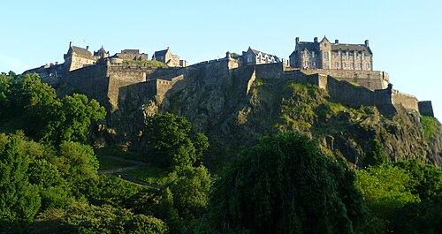
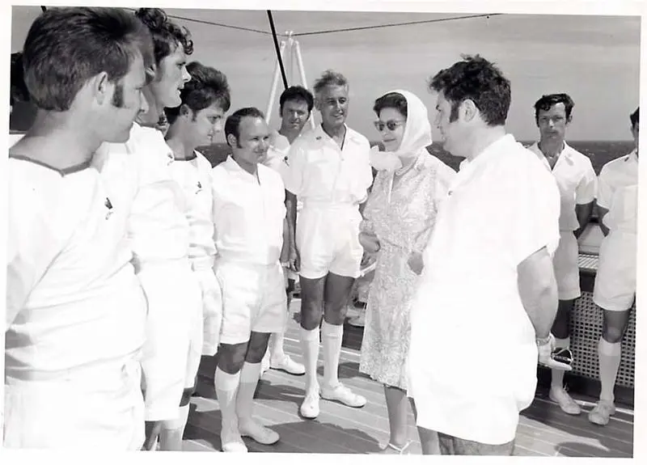
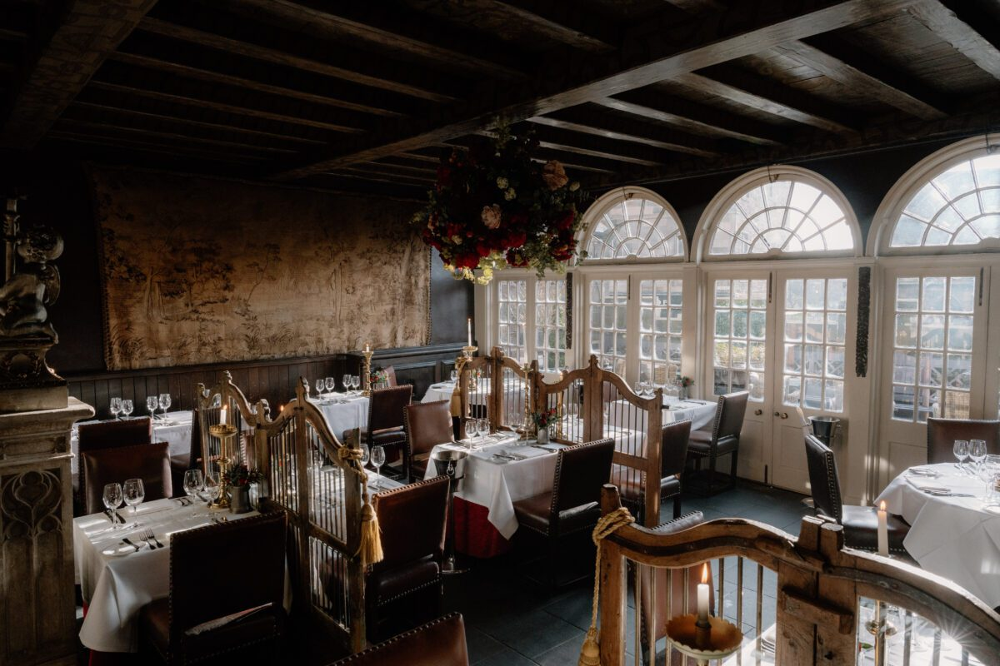
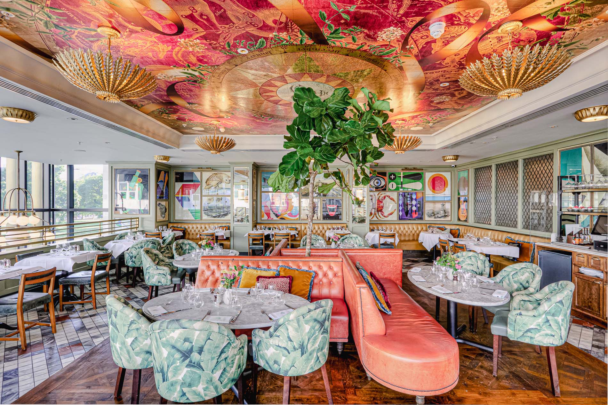
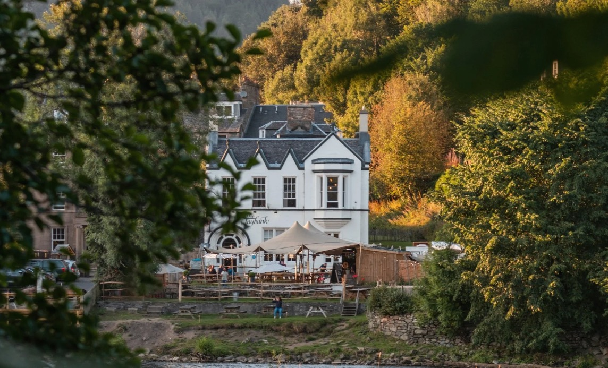
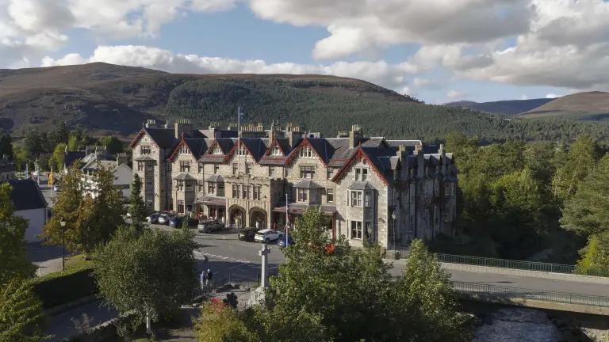
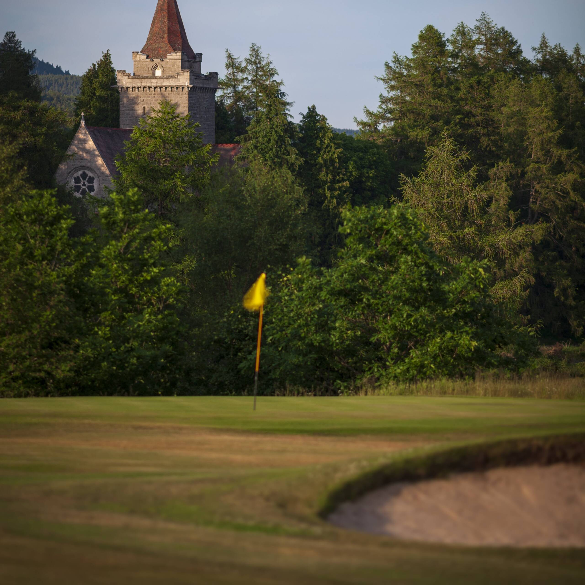
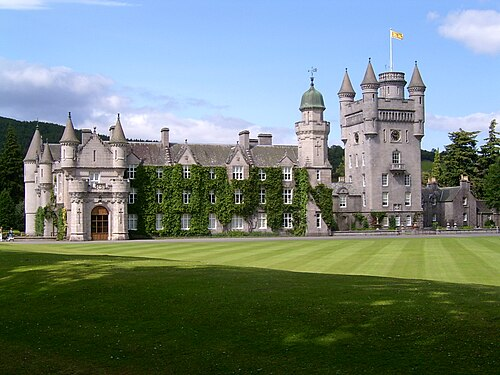
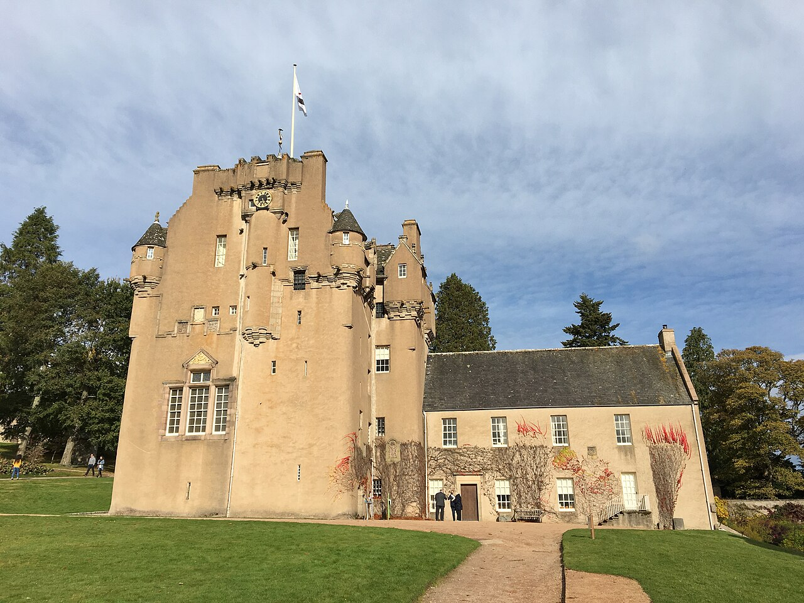

24–26
Edinburgh City Break
Friday to Sunday · 24–26 July 2026
🏰 Top Things to Do

⭐ Book AheadEdinburgh Castle
Dominating the Old Town skyline from its ancient volcanic rock, Edinburgh Castle is the beating heart of Scottish history. Home to the Crown Jewels, the Stone of Destiny, and sweeping views across the city to the Firth of Forth. Walk the ramparts where kings and warriors once stood — a breathtaking reminder that Scotland's story is one of endurance and grandeur.
Official Website 🗺 Great Overview
🗺 Great Overview
Hop-On Hop-Off Bus Tour
The perfect way to get your bearings — hop on and off at Edinburgh's key landmarks as you please. From the Royal Mile to Holyrood Palace, Arthur's Seat to the New Town, the bus covers all the highlights with live commentary. Ideal for all ages and a great way to decide which spots deserve a deeper look on foot.
Tour InfoCamera Obscura & World of Illusions
Five floors of mind-bending illusions and hands-on exhibits at the top of the Royal Mile. The historic Camera Obscura — a live, real-time projection of Edinburgh's streets — has been pulling in crowds since 1853. The rooftop views alone are worth the visit. Genuinely brilliant for kids and adults alike.
Visit Camera Obscura ⚡ Magical
⚡ Magical
Harry Potter Guided Walking Tour
Edinburgh was the city that inspired J.K. Rowling as she wrote the series in its many coffee shops and dark wynds. Discover the Greyfriars Kirkyard that inspired Diagon Alley, the gravestone that gave Voldemort his name, and the school that became Hogwarts. A storytelling experience that brings the magic to life on the very streets where it was imagined.
Book the Tour
👑 Royal HistoryRoyal Yacht Britannia
Berthed at Leith's Ocean Terminal, Britannia served the Royal Family for 44 years and 968 official voyages. Explore five decks of immaculately preserved state apartments, crew quarters and royal bedrooms — all exactly as they were. Audio guides bring the stories to life across every beautifully frozen space aboard.
Visit Britannia 👧 Kids Adventure
👧 Kids Adventure
Edinburgh Kids Underground Tour
A multi-sensory small-group journey beneath Edinburgh's streets, designed for families. Explore the eerie underground closes and vaults hidden below South Bridge — spaces frozen since the 18th century. Costumed guides bring the city's darker history to life in a way that thrills without terrifying. An unforgettable exploration of Edinburgh's hidden world.
Book on GetYourGuide🍷 Edinburgh Evening Dining

🏆 Most IconicThe Witchery by the Castle
Perhaps the most theatrical restaurant in Scotland — set in a 16th-century merchant's house at the gates of Edinburgh Castle. Jewel-coloured antiques, carved oak, blazing candelabra and an atmosphere dripping with gothic intrigue. The food is exceptional Scottish produce: venison, lobster, whisky sauces. But it's the setting you'll never forget.
Reserve a Table
🌟 Smart & StylishThe Ivy on the Square
The Ivy's Edinburgh outpost overlooking St Andrew Square — trademark British glamour, impeccable service and a crowd-pleasing menu from dressed crab to shaking beef. A reliable choice for a group dinner where everyone needs something different. Smart without being stuffy, and the cocktails are reliably excellent.
Book The Ivy 🎊 Most Dramatic
🎊 Most Dramatic
Cocktails in the Dome
A former bank transformed into a breathtaking space beneath a stunning domed ceiling of leaded glass, ornate balconies and sweeping staircases. Whether for cocktails, afternoon tea or dinner, the grandeur of the setting is worth the visit on its own. Dress up, look up, and raise a glass in one of Scotland's most beautiful rooms.
Visit the Dome27
Journey North
Monday · 27 July 2026
🌅 Morning — Into the Highlands
Drive Edinburgh to Braemar via Dunkeld
Leave Edinburgh and follow the A9 into Perthshire, watching the landscape transform from rolling farmland to ancient Caledonian forest. Wind through Dunkeld — a handsome cathedral town in a gorge of the River Tay — before climbing into the Grampian Mountains to Braemar. Around 2.5 hours of increasingly spectacular Highland scenery.
🍽 Afternoon — Lunch at Dunkeld

🎵 Local FavouriteThe Taybank Hotel, Dunkeld
A beloved institution perched right on the banks of the River Tay, a stone's throw from Dunkeld Cathedral's ancient grounds. The Taybank is famous for its vibrant folk music sessions and serves proper pub food alongside a well-stocked bar. Sit outside if the weather allows and watch the Tay rush past — a proper Highland stop to break the drive and fuel up for the adventure ahead.
The Taybank Hotel🏔 Evening — Mar Lodge Arrival

🏡 National Trust for Scotland Estate · Braemar
Mar Lodge Estate — The Highland Fun Begins!
📍 Mar Lodge Estate, Braemar, Aberdeenshire AB35 5YJ
One of Scotland's most extraordinary properties — a Victorian shooting lodge set deep in the Cairngorms National Park, managed by the National Trust for Scotland. Mar Lodge comes with 30,000 acres of wilderness, four of the five highest peaks in Britain, and a grand ballroom hung with hundreds of stag antlers. Everyone arrives this evening for a grand dinner to kick off the Highland adventure in style.
Mar Lodge on NTS28
Into the Cairngorms
Tuesday · 28 July 2026
🌄 Morning — High Ground
Hike & Walk in the Cairngorms
Britain's largest national park and one of Europe's last great wildernesses — the Cairngorms around Braemar offer walking for every level. From gentle riverside paths along the Dee to the challenging ridgelines of the high plateau, the landscape is ancient, boulder-strewn and hauntingly beautiful. Keep an eye out for red squirrels, ospreys, red kites and the famous Cairngorms red deer. An early morning walk here, with the hills turning copper in the rising sun, is something you won't forget.
Cairngorms Paths Guide☀️ Afternoon — Fife Arms & Braemar

⭐ World ClassLunch at The Fife Arms, Braemar
One of Scotland's most celebrated hotels — a Victorian coaching inn transformed by art dealers Hauser & Wirth into an extraordinary retreat filled with over 16,000 artworks. The Flying Stag bar and restaurant serve exceptional local food: Highland venison, fish from the Dee, Aberdeenshire beef — in surroundings that are equal parts dramatic and cosy. A proper Highland lunch worth dressing up for.
Fife Arms RestaurantA Wee Wander Around Braemar
Braemar is the beating heart of Royal Deeside — a charming highland village at 340 metres, flanked by dramatic peaks and the River Dee. Stroll the main street, pop into the local shops, and take in the handsome Braemar Castle — a turreted stronghold that once served as a government garrison after the Jacobite uprising. Small, beautiful, and utterly, completely Scottish.
🌆 Evening — Ceilidh at the Lodge
Games and Ceilidh Dancing at Mar Lodge
The perfect Highland evening — traditional Scottish country games in the grand ballroom, followed by ceilidh dancing to reel music. Strip the willow, the Gay Gordons, the Dashing White Sergeant — no experience required, just energy and a willingness to be spun round until you're dizzy. The antlered ballroom at Mar Lodge was built for exactly this kind of revelry.
29
Royal Deeside Day
Wednesday · 29 July 2026
🌅 Morning — Choose Your Adventure

🏌️ Gentlemen's SportMen's Golf @ Balmoral Golf Club
A round on one of Scotland's most beautifully situated golf courses — Balmoral Golf Club occupies a spectacular position in the Cairngorms National Park, with holes laid out through heather moorland and birch woodland against a backdrop of soaring Munros. Used by the Royal Family during their summer stay, this is golf in its most dramatic Highland setting. Proper spikes and a tartan pullover strongly encouraged.
Balmoral Golf ClubBallater — Ice Cream & a Wee Nosy
While the golfers battle Balmoral's heather rough, a leisurely morning in the pretty Victorian village of Ballater is the perfect alternative. A Royal Warrant village nestled on the banks of the Dee, Ballater is full of excellent independent shops, galleries and — most importantly — exceptional ice cream. Wander, browse, grab a cone, and enjoy the magnificent mountain backdrop. These shops have been supplying the Royals since Queen Victoria's day.
☀️ Afternoon — Balmoral & The Distillery

👑 Royal ResidenceBalmoral Castle
The private Scottish home of the British Royal Family since 1852 — purchased by Prince Albert and rebuilt in the Scottish Baronial style. The castle grounds, ballroom and gardens are open to visitors, set in some of the most stunning Highland scenery imaginable. Walking trails wind through woodland and along the River Dee, with exhibitions on the castle's history and its royal residents through the generations.
Visit Balmoral 👑 Royal Warrant
👑 Royal Warrant
Royal Lochnagar Distillery
Just a short walk from Balmoral sits one of Scotland's smallest and most distinguished distilleries — holder of the Royal Warrant since Queen Victoria herself visited in 1848. The single malt is smooth, complex and deeply Highland: rich dried fruit, subtle spice and a long warming finish. The distillery tour takes you through traditional pot stills and the bonded warehouse, ending with a proper tutored tasting.
Royal Lochnagar🌆 Evening — Whisky Tasting at the Lodge
Whisky Tasting at Mar Lodge
Back at Mar Lodge for a convivial evening whisky tasting — line up the bottles from Royal Lochnagar and any other Deeside drams acquired along the way. Compare a sherried Speysider with a peaty Islay expression, argue about which is better, and settle the debate by opening another. Highland hospitality at its finest.
30
South to Crathes
Thursday · 30 July 2026
🌅 Morning — Farewell Mar Lodge
Leave Mar Lodge
Pack up, take one last look at the Cairngorms from the Lodge's grand steps, and bid farewell to Braemar. The next stop is a little further south — but still deep in the heart of Royal Deeside, and just as special.
☀️ Afternoon — Glen Tanar
Horse Riding at Glen Tanar Estate
Glen Tanar Estate offers guided horse riding through some of the most beautiful ancient Caledonian pinewood in Scotland — a rare habitat that once covered the entire Highlands. Wind through sun-dappled forest, across heathery moorland and along the meandering Water of Tanar on horseback. The equestrian centre caters for all abilities, from complete beginners to experienced riders.
Glen Tanar EquestrianCambus O'May Walk + Cheese Shop
An alternative afternoon: the Cambus O'May Circular is one of Deeside's loveliest gentle walks — crossing the famous Victorian suspension bridge over the River Dee and looping through ancient birch and Scots pine woodland with stunning hill views. Don't miss the excellent local cheese shop nearby for provisions to accompany this evening's supper.
Walk Route🌆 Evening — The CowShed, Banchory
Fish & Chips at The CowShed
A Banchory institution — The CowShed is a beloved local restaurant in a beautifully converted farm steading, serving first-rate fish and chips alongside an impressive menu of steaks, burgers and seasonal specials. The fish is locally sourced and the chips are properly excellent. After days of Highland hiking and whisky, there is nothing more satisfying. The Deeside equivalent of a standing ovation.
The CowShed Restaurant31
Crathes & the Clan
Friday · 31 July 2026
🏰 Morning — Crathes Castle

🏰 NTS GemCrathes Castle
A magnificent 16th-century tower house set among ancient yew hedges and walled gardens on the banks of the River Dee — one of the finest examples of a Scottish laird's castle in the country. The painted ceilings inside are extraordinarily well preserved, representing some of the finest Renaissance decoration in Scotland. The celebrated gardens, including the famous Yew Topiary, are among the most beautiful in the NTS portfolio.
Crathes Castle — NTS☀️ Afternoon — Milton & Park Shop
Milton & Park Shop
A browse through the excellent Milton of Crathes shops — a charming collection of independent outlets on the Crathes estate, including a garden centre, gift shop and café. Stock up on Scottish gifts, local produce and provisions for the evening. The farm shop is particularly strong for local charcuterie, cheeses and Deeside produce.
🔥 Evening — Clan Stien BBQ
BBQ at Glas Barr — Home of the Clan Stien
The Highland adventure comes home — a proper outdoor BBQ at Glas Barr, ancestral home of the clan Stien. Fire up the grill, open something excellent from the cellar, and celebrate being in Scotland together. The kind of evening that only gets better as the Highland dusk settles and the stars come out over Deeside.
1 Aug
Aboyne Highland Games
Saturday · 1 August 2026
🏅 All Day — The Games
Aboyne Highland Games
One of Scotland's finest and most authentically Highland gatherings — the Aboyne Highland Games have been held on the village green since 1867 and are renowned for their spectacular setting and traditional atmosphere. Watch the heavy events: tossing the caber, the hammer throw, the stone put — contests of raw Highland strength unchanged for centuries. Pipe bands parade, Highland dancers compete, and the whole community turns out in their finest tartan. An utterly authentic experience that will stay with you for years.
Full Programme🌆 Evening — Food Trucks
Food Trucks at the Games
Round off the Games with a tour of the food trucks — venison burgers, Scotch pies, fresh-cut chips and tablet. Take your pick, find a spot on the grass, and toast another magnificent day in the glens.
2 Aug
Au Revoir, Scotland
Sunday · 2 August 2026
✈️ Homeward Bound
Drive Back to Edinburgh
The Kays make the journey south — following the same spectacular Deeside roads back towards the capital, the mountains slowly retreating in the rear-view mirror. Stop for a coffee in Dunkeld if the mood takes you, and savour the final miles of Scottish countryside before the city horizon appears.
Fly Edinburgh → Paris CDG
The flight back to Paris — pockets full of tablet and shortbread, heads full of memories. Edinburgh Airport is efficient and well-connected; allow plenty of time for a final browse of the shops and one last dram at the departure lounge bar.
Baguette ;-)
Back to Paris, back to baguettes — and the sweet realisation that Scotland was, as it always is, absolutely worth it. See you back in Paris!